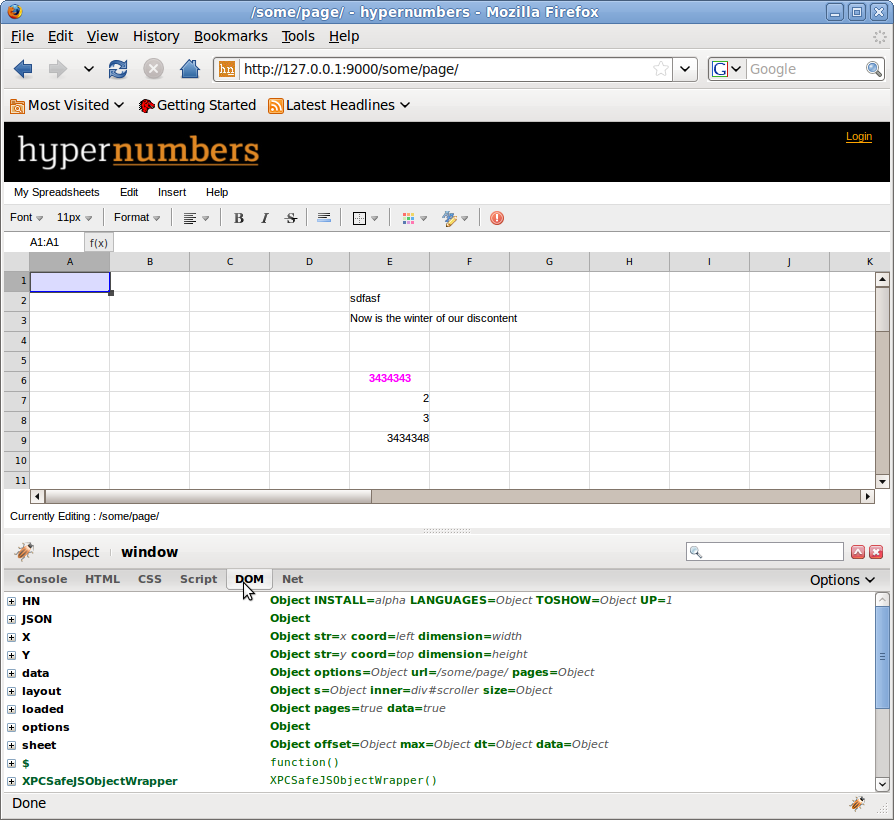
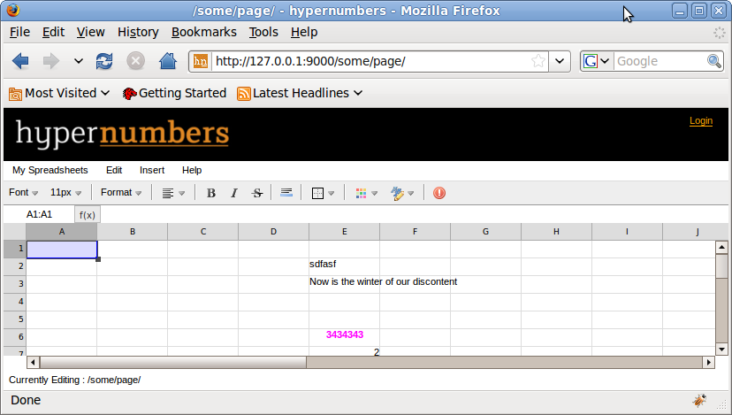
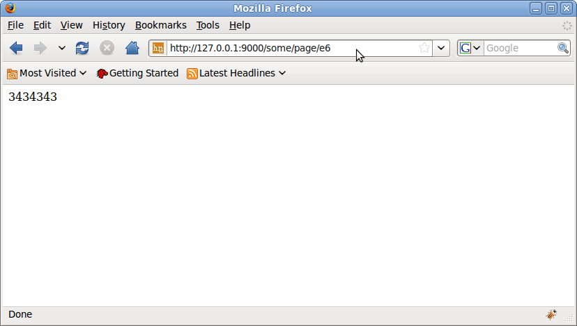
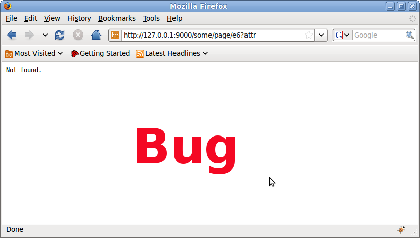
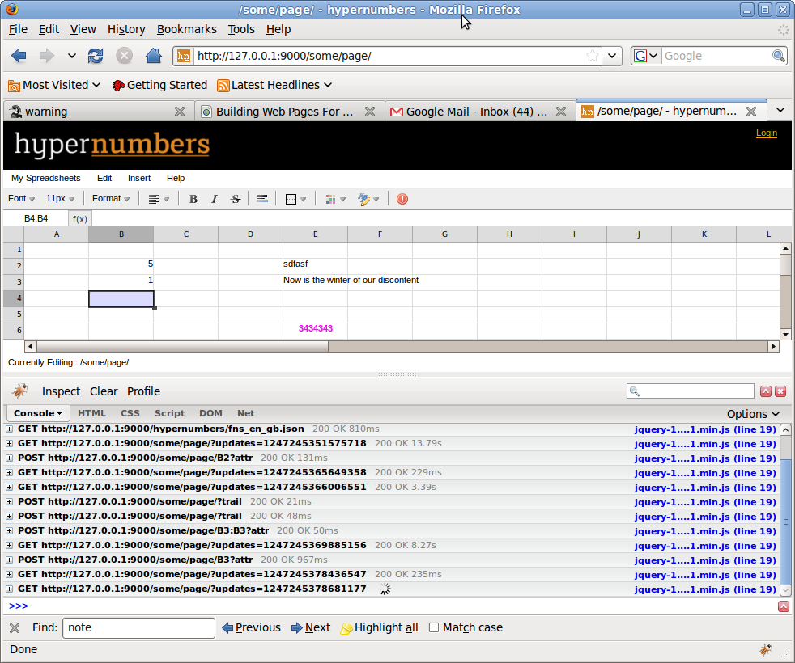
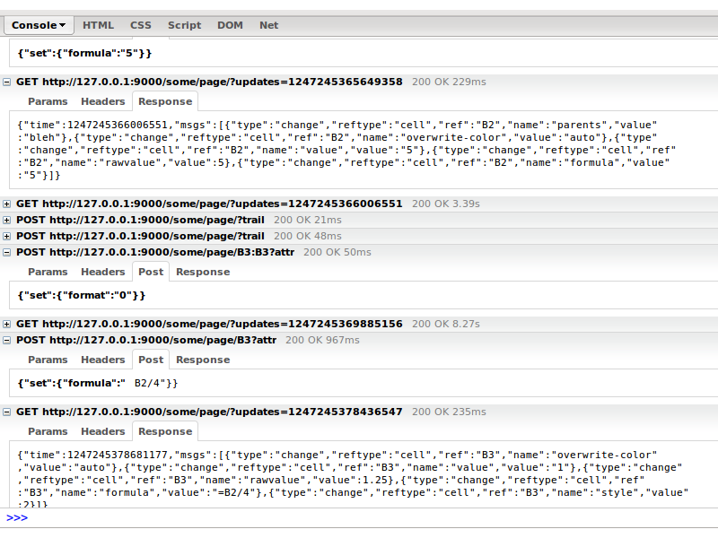
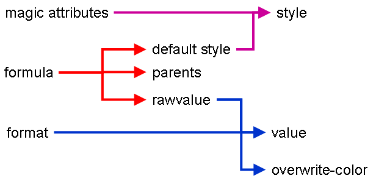
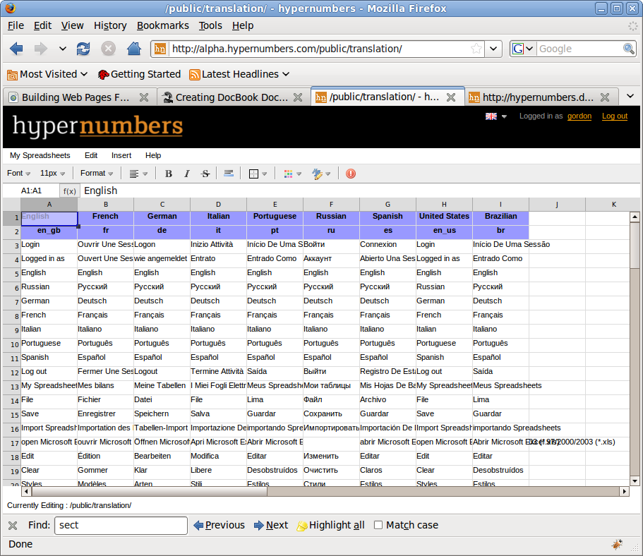
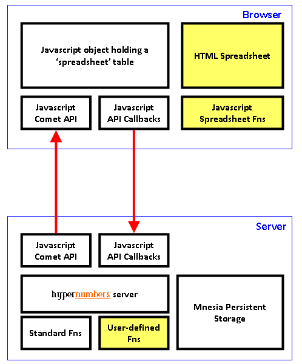

Table of Contents
Building Web Pages For The Hypernumbers Server is aimed at the average software developer who wishes to build tools for normal people to use to build hypernumbers applications.
The purpose of this document is to:
- explain how hypernumbers works
- show some worked examples of custom GUI's
- enable developers to write and deploy custom GUI's for their users
This document will cover the following things:
- how existing hypernumbers GUI's work
- building GUI's in Javascript using the existing open source hypernumbers Javascript libraries
- the main hypernumbers JSON GUI api
This document will NOT cover the following things:
- writing server-side functions
- deploying GUI's on the server
- storing information under your own attributes on a hypernumber
- modifying or extending the hypernumbers open source Javascript libraries
- building your own GUI framework using the raw hypernumbers server JSON API
- the JQuery library which hypernumbers uses 'under the covers'
This is not a document for non-technical people - you need to be a programmer. If you are a basic Excel user who wants to build things with hypernumbers this is not for you. It is a technical document.
This is a document for software developers who wish to build tools for users to use with a hypernumbers server. These tools should be aimed at non-technical people - enabling them to build applications in the normal hypernumbers way. It is aimed at the generalist and not the Javascript Guru.
| Chapter | Description |
| Your Development Environment | explains how to set up your machine in order to develop with, and debug hypernumbers GUI's |
| How hypernumbers GUI's Work | steps through the event cycle of the hypernumbers GUI explaining in general terms how the system is architected |
| The Internals GUI | shows how to build a basic internals GUI that displays the internals of the update cycle. This GUI is ideal to use to learn how hypernumbers apps work by following the event cycle and seeing how updates are pushed out to the client. It also forms the basic framework for building your own GUI's |
| The Dashboard GUI | builds the most primitive sort of GUI in a step-by-step manner - a GUI that does no updates to the server side data but just presents the information on a spreadsheet in a more appropriate manner |
Note
More sections to follow!Table of Contents
This chapter will explain how to set your machine up to develop GUI's for hypernumbers. It will:
- focus on the Firefox broswer (suitable for Windows, Mac, Linux and other Unix development platforms)
- show which plug-ins are most useful for hypernumbers GUI developers
- provide a brief overview of Javascript debugging tools and techniques
Note
If you are a Javascript Guru and happy with, for instance, the Safari development environment feel free to ignore this section and do yer own thang...Note
This is not a javascript tutorial or a detailed exposition of debugging Javascript programmes.hypernumbers needs Firefox 3 or above which can be obtained from http://www.mozilla.com/en-US/firefox/upgrade.html .
You should install the following plug-ins:
- Firebug
- JSONView
which can be installed from https://addons.mozilla.org/en-US/firefox/
Firebug enables you to trace hypernumbers AJAX calls and inspect the DOM to follow what is going on.
This screenshot shows us inspecting the background Ajax calls of the main hypernumbers spreadsheet GUI:

This screenshot shows us inspecting the DOM of the main hypernumbers spreadsheet GUI:
As we go on we will see these options being used to debug our application as we build it.
Table of Contents
This section will:
- give an overview of how hypernumbers works
- show you how to inspect the inner workings using Firebug
- list the various pieces of data that the hypernumbers display API provides
- a quick look at the hypernumbers POST API that allows a GUI to change the server state
- multilingualisation
There are a number of key concepts to grasp that underpin the hypernumbers application. Hypernumbers makes a strict separation between pages and hypernumbers (or cells as they appear to the end user).
It is easiest to just show this. Look at the following screenshot - notice that the URL ends in a slash - in hypernumbers this indicates a page:
http://127.0.0.1:9000/some/page/
Now lets look at cell e6 on the page. Notice that the URL for a hypernumber (or cell) ends in the cell reference:
http://127.0.0.1:9000/some/page/e6
What appears to be a page of a spreadsheet is in fact an 'empty' page populated by lots of cells each of which has its own URL.
This is the basic operation of a hypernumbers server. The user requests a page - the hypernumbers server returns an html page with which uses Ajax calls to construct itself from a number of hypernumbers/cells. There are a number of conventions which determine which cells appear on which pages.
- the cells 'on' that page
- the cells 'on' a page and a specific subpage
- the cells 'on' the parent page
We will see some of the design patterns later in this document
Warning
Be sure to write examples of these design patterns prior to release of this doco, ya bas!The basic cell URL is not so useful - it is worth expanding it with a decorator that will give us more information about the cell:
http://127.0.0.1:9000/some/page/e6?attr
We can use this approach to look at the attributes of cells, ranges, columns, rows and pages by using the appropriate notation for them:
http://127.0.0.1:9000/some/page/e1:f6?attr
http://127.0.0.1:9000/some/page/e:f?attr
http://127.0.0.1:9000/some/page/1:6?attr
http://127.0.0.1:9000/some/page/?attr
In addition individual objects can be referred to by names instead of absolute ranges - this has a similar syntax:
http://127.0.0.1:9000/some/page/@name?attr
Getting all the attributes of a page by using a page URL plays an important part in the hypernumbers GUI building lifecycle as we will see later.
Lets use Firebug to see how the main hypernumbers GUI works. Simply (re)load a hypernumbers page and look at the Ajax traffic:
Firebug tells the story. Hypernumbers servers up the index page which looks like an Excel/OpenOffice spreadsheet interface. That page then makes 4 ajax requests.
http://127.0.0.1:9000/some/page/?attr
http://127.0.0.1:9000/some/page/?pages
http://127.0.0.1:9000/some/page/?fns_en_db.json
http://127.0.0.1:9000/some/page/?updates=1234567890
The first of these returns all the attributes of the current page - that is to say the attributes of all cells, rows and columns on the page, as well as any particular attributes of the page itself. This data is used to build the page - putting sdasf in cell e2 and a purple centred 3434343 in cell e6, etc, etc
The second of these returns a json structure that is a tree of pages which the current logged in user has permissions to see - this is used to build the My Spreadsheets menu.
The third of these returns the data for the functions dialog box. Notice that it is marked by language. The current language that the spreadsheet is using is stored in a cookie and the appropriate version of the GUI is sent along with the function set in the selected language.
The fourth Ajax call is mysteriously not completed. The update call is acutally a long-lived Comet connection which the server uses to update the GUI.
This fourth connection is the key to the GUI event cycle in hypernumbers. The critical point is the user action on the GUI cannot determine what the GUI should display. It is worth understanding why that is. Consider the following set of actions:
INSERT INTO CELL => b2 VALUE => 5
SET FORMAT OF CELL => b3 FORMAT => "0"
INSERT INTO CELL => b3 VALUE => =b2/4
So what value should cell b3 display? The answer is that the formula calculates to 1.25 and the format which indicates how the value should be displayed says it must be rounded to the nearest integer - so the result is shown as 1.
Lets see how this plays out in hypernumbers? If we peform the actions we can see the Ajax trail shown below:
It is worth breaking out the different things that have happened:
We see the user operations appear as a series of http POST's where very simple JSON objects are posted to the cell URL's and the response of these actions is streamed over the long-lived update COMET GET's. The updates have a time parameter on them which is used for sequencing responses but has not other menaing.
Note
The various trail posts are a special API that enables the GUI builder to have the GUI write back a little trail of user actions to the logsThis section will look at how hypernumbers GUI's dispaly information:
- attributes information
- update information
Lets look in detail at some of the information passed around in these various calls. Because Firebug doens't show off the JSON to best advantage we will just call the attributes URL in directly in the browser and examine it in JSONView. Here are all the attributes of a page copied from JSONView:
{
* time: 1247251662458203
* user: "anonymous"
* host: http://127.0.0.1:9000
* viewed-tour: "true"
* lang: "en_gb"
*
-
page: {
}
*
-
styles: {
o 5: "color:#FF00FF;font-weight:bold;text-align:center;"
o 2: "text-align:right;"
o 9: "font-weight:bold;text-decoration:line-through;"
o 10: "font-weight:bold;text-decoration:line-through;text-align:right;"
o 6: "font-weight:bold;"
o 3: "font-weight:bold;text-align:right;"
o 7: "font-weight:bold;text-align:left;"
o 4: "font-weight:bold;text-align:center;"
o 1: "text-align:left;"
o 8: "font-weight:bold;text-decoration:line-through;text-align:left;"
}
*
-
row: {
}
*
-
column: {
}
*
-
cell: {
o
-
2: {
+
-
5: {
# rawvalue: "sdfasf"
# formula: "sdfasf"
# parents: "bleh"
# value: "sdfasf"
# style: 8
# overwrite-color: "auto"
}
+
-
2: {
# rawvalue: 5
# formula: "5"
# parents: "bleh"
# value: "5"
# style: 10
# overwrite-color: "auto"
}
+
-
3: {
# style: 9
}
+
-
4: {
# style: 9
}
}
o
-
9: {
+
-
5: {
# rawvalue: 3434348
# formula: "=sum(E6:E8)"
# parents: "bleh"
# value: "3434348"
# style: 2
# overwrite-color: "auto"
}
}
o
-
6: {
+
-
5: {
# rawvalue: 3434343
# formula: "3434343"
# parents: "bleh"
# value: "3434343"
# style: 5
# overwrite-color: "auto"
}
}
o
-
3: {
+
-
5: {
# rawvalue: "Now is the winter of our discontent"
# formula: "Now is the winter of our discontent"
# parents: "bleh"
# value: "Now is the winter of our discontent"
# style: 8
# overwrite-color: "auto"
}
+
-
2: {
# rawvalue: 1.25
# formula: "=B2/4"
# parents: "bleh"
# value: "1"
# style: 10
# format: "0"
# overwrite-color: "auto"
}
+
-
3: {
# style: 9
}
+
-
4: {
# style: 9
}
}
o
-
7: {
+
-
5: {
# rawvalue: 2
# formula: "2"
# parents: "bleh"
# value: "2"
# style: 2
# overwrite-color: "auto"
}
}
o
-
4: {
+
-
5: {
# style: 6
}
+
-
2: {
# style: 6
}
+
-
3: {
# style: 6
}
+
-
4: {
# style: 6
}
}
o
-
8: {
+
-
5: {
# rawvalue: 3
# formula: "3"
# parents: "bleh"
# value: "3"
# style: 2
# overwrite-color: "auto"
}
}
}
}
Reading this JSON structure top to bottom we see 6 distinct things being conveyed:
- general information
- page attributes (here there are none)
- styles
- row attributes (here there are none)
- column attributes (here there are none)
- cell attributes
We will discuss these 6 categories of information separately
This just stores a range of general information, who the user is, wha the host is, have they seen the tour or should it be displayed and what language the user expects
Note
GUI developers cannot define and persist their own general information to the serverhypernumbers reserves no page attributes.
Note
GUI developers can define and persist their own page attributes and retrieve them to use in GUI's for any purpose they wishHypernumbers operates a magic-style system. Various CSS attributes are recognised and may be set by the GUI. When this happens they are trapped in a magic style. Each cell has a style attribute which contains an index. That index is used to look up the style table.
The following CSS elements are in the magic style
- border-right-style
- border-left-style
- border-top-style
- border-bottom-style
- border-right-color
- border-left-color
- border-top-color
- border-bottom-color
- border-right-width
- border-left-width
- border-top-width
- border-bottom-width
- color
- vertical-align
- background-color
- font-weight
- font-size
- font-family
- font-style
- font-stretch
- text-decoration
- text-shadow
- text-align
- whitespace
Styles have page scope (which is why copy'n'paste is operated as a server-side function)
Note
GUI developers cannot define and persist their own style elementsThe only row attribute currently set is height.
Note
GUI developers are free to set their own row attributes (eg 'hidden')The only column attribute currently set is width.
Note
GUI developers are free to set their own column attributes (eg 'hidden')The key attribute of a hypernumber/cell is the formula. This is essentially what the user types directly into the cell and it can be a range of things:
- a number
- a string
- a date
- a boolean
- a formula
Numbers can be:
- positive
- negative
- integer
- float
- exponent
Booleans can be:
- true
- false
In addition you can force a string by quoting it. Thevariants of these 6 types of entry are shown below:
1
-2
3.45e-1
-1.23E+1
bob's your uncle
and betty's "your aunt"
true
false
1/2/33 => a date: displayed as 1st February 2003
=1+2 => displays as 3
=1+2*b3/sum(c4:c9) => displays as the result of the calculation
'=1+2 => displays as =1+2
'1/2/33 => displays as 1/2/33
From this basic relationship there flows a variety of cell attributes (not all of which are exposed to the GUI) which have a complex relationship.
The 'formula' attribute is evaluated resulting in the 'rawvalue'.
FORMULA => 1 RAWVALUE => 1
FORMULA => true RAWVALUE => true
FORMULA => hello sailor RAWVALUE => "hello sailor"
FORMULA => 1/2/33 RAWVALUE => 1st February 1903 00:00:00
FORMULA => =4/5 RAWVALUE => 1.25
The 'format' is then applied to the 'rawvalue' resulting in the 'value' and the 'overwrite-color'. The formats are compatible with Microsoft Excel 97 formats. An Excel format allows text colours to be specified depending on the value (typically red text for negative numbers, but there are other options). The 'overwrite-color' is generated from the format (if appropriate).
The various 'magic' attributes are used to construct the style. If there is no style elements associated with a cell a default style is constructed for a cell. This is typically just an alignment:
- numbers are aligned right
- booleans are aligned centre
- dates are aligned centre
- strings and quoted items are aligned right
Lets look at some typical update messages:
{
* time: 1247310974071121
*
-
msgs: [
o
-
{
+ type: "change"
+ reftype: "cell"
+ ref: "H2"
+ name: "style"
+ value: 2
}
]
}
{
* time: 1247311089661061
*
_
msgs: [
o
-
{
+ type: "delete"
+ reftype: cell"
+ ref: "E2"
+ name: "rawvalue"
+ value: "sdfasf"
}
]
{
* time: 1247311470390915,
*
_
msgs: [
o
-
{
+ type: "style"
+ index: "11"
+ css: "background-color:#000080
+ text-align: "right;"
}
]
}
We see that they split into 2 - cell and style messages - and that the cell messages have 2 types - change and delete. This is all fairly straightforward.
The best way to understand the hypernumbers POST API is simply to perform some actions in a normal spreadsheet and look at the AJAX calls in Firebug:
{"set":{"font-family":"serif"}}
{"set":{"mark":"Message for the logs"}}
{"clear":"contents"}
{"copy":{"src":"http://127.0.0.1:9000/some/page/E8:E8"}}
To understand how the POST API works it is important to look at the URL which is being posted to. Some actions are performed by POST'ing against a cell, some a range, some a column or row and some a page. On occassions the same API can be used against a combination of URL types (consult the API documentation for details).
Warning
Write the API documentationThe reader is invited to explore the existing hypernumbers API and understand the various post mesages. The API is largely self-explanatory.
Note
There are 2 post API calls which have a somewhat odd behaviour. These are 'trail' and 'mark'. 'trail' is used by a GUI designer to get the GUI to report back user behaviour (eg looking at menu items, or exploring aspects of the GUI) which the GUI designer would like to be able to monitor remotely. 'mark' is an API that simply collections a text string from the user and sends it. What both these API calls have in common is that neither touches the main hypernumbers server. They both simply write a message to the server-side logs. 'trail' messages leave a trail of the user behaviour in the logs. 'mark' messages mean that the developer can replay the server logs on a test or development machine and and then watch the users behaviour up to the point in which they feel the need to report a bug or make a commentHypernumbers GUI's are multilingual and the translation of them is done via hypernumbers pages:
It is good practice to build your GUI's to be multi-lingual from the start and we will see how to do that later on in this document
Having now explained how the hypernumbers API's work and shown how to examine them, the next section of this document will step through building a custom GUI. Before doing that it is worth understanding hypernumbers strategy for supporting custom GUI development.
The general architecture of the hypernumbers stack is shown below:
The system has been architected with a modular design. There are large and well tested modular components (shown in white) which support the custom aspects of a particular hypernumbers deployment (the components shown in yellow). Although the hypernumbers GUI API's are pretty straightforward and a developer could build their own complete GUI on top of the raw AJAX calls it is much easier to build custom GUI's around a tested set of Javascript libraries that abstract out browser specific problems. It is this that we shall look at in the next section.